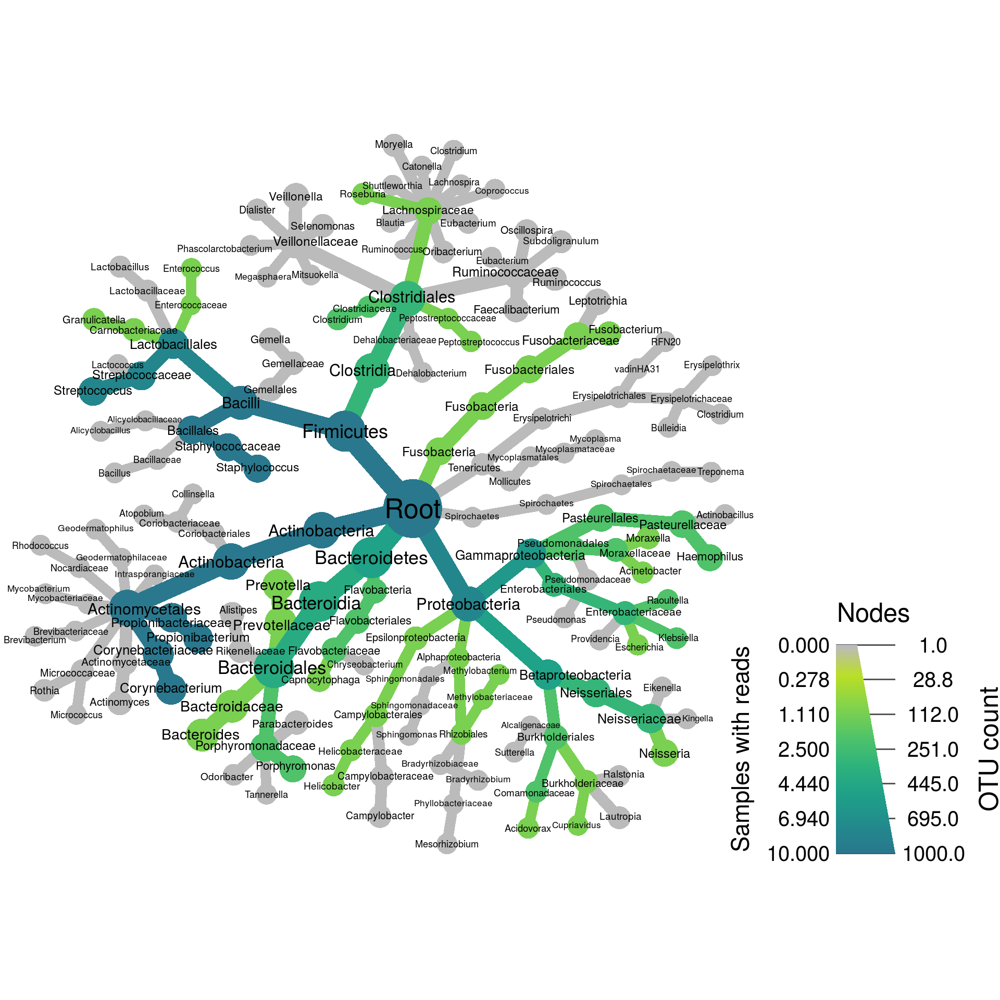
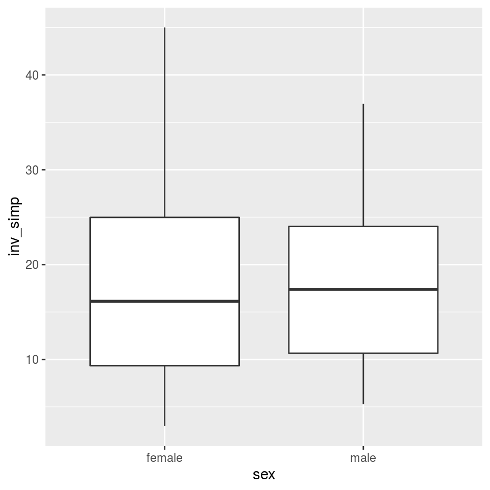
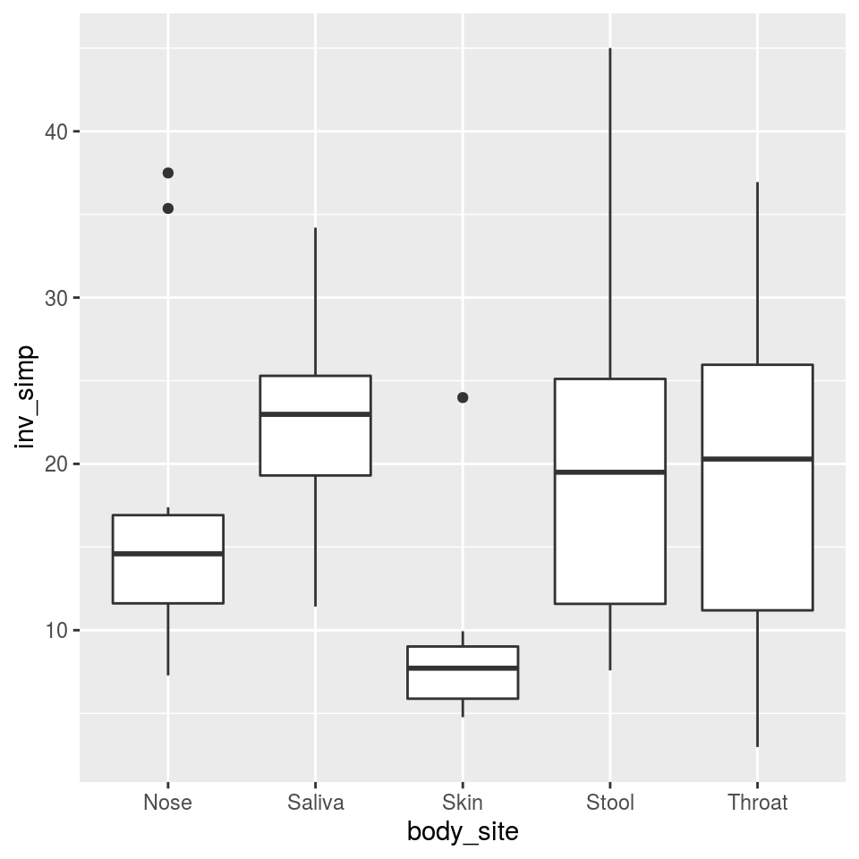
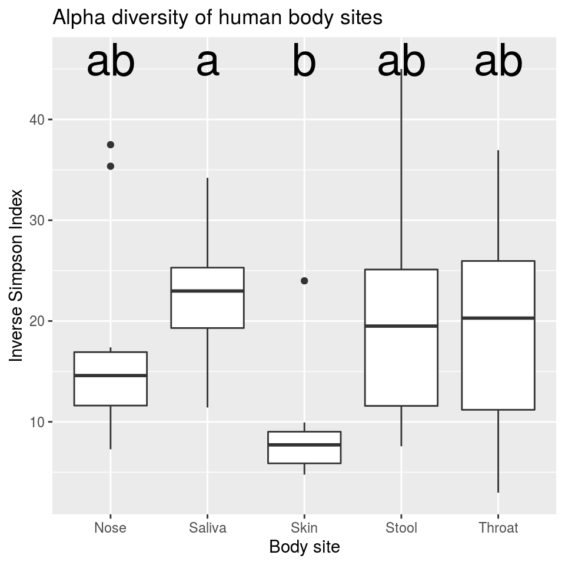
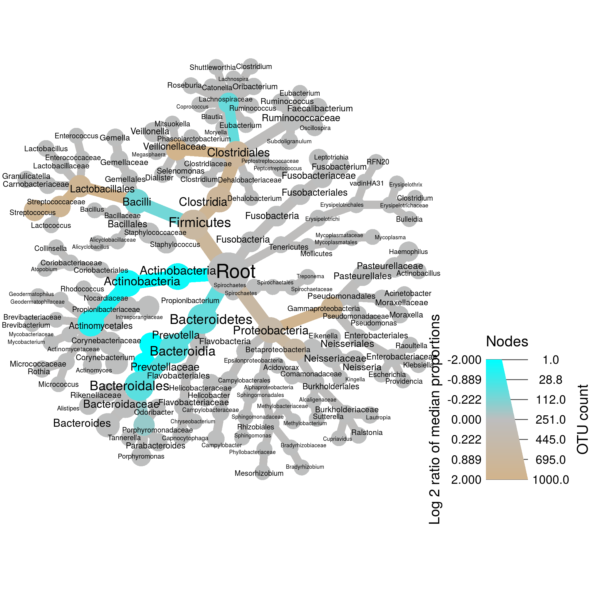
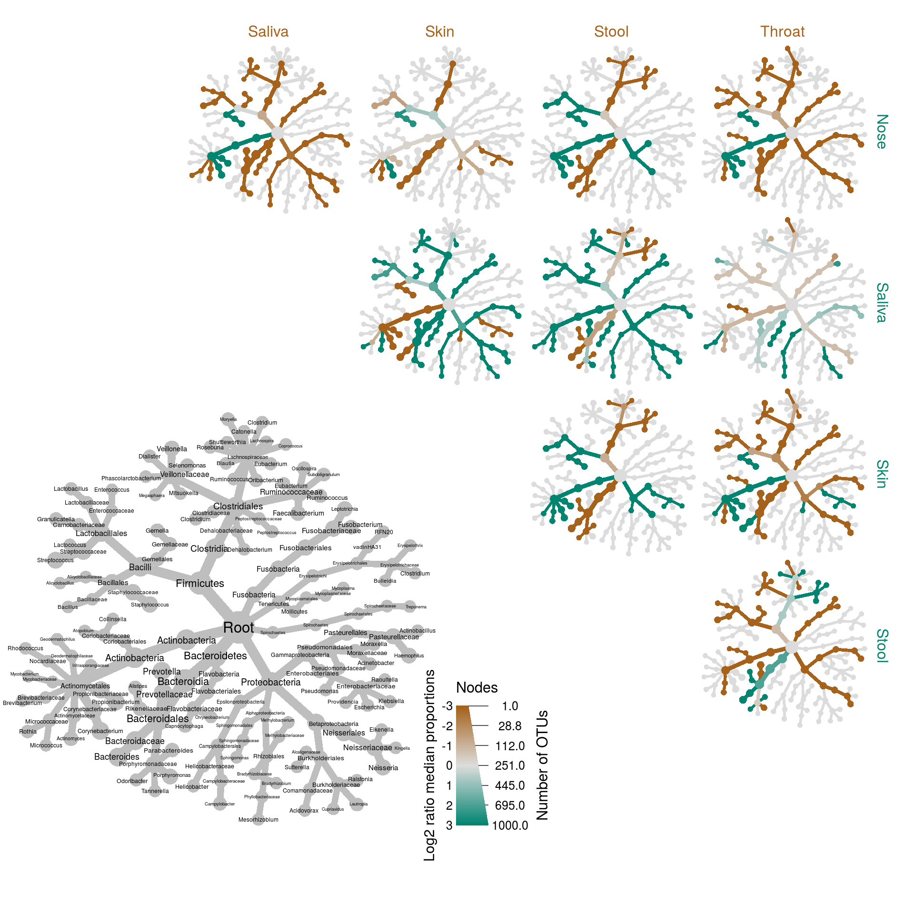

Example analysis
This is a short example analysis to give you a feel for how metacoder and taxa are used in microbiome analysis. If something does not make sense now, don’t worry! We will cover everything shown here in greater detail in other sections.
Reading data
The first step in any analysis is getting your data into R. This can be difficult for taxonomic data since it has a hierarchical component (i.e., the taxonomic tree). Metacoder has functions for parsing specific file formats used in metagenomics research. However, for this demonstration, we will be using a more all-purpose parser from the taxa package meant for tabular data.
Included in metacoder is an example dataset that is a subset of the Human Microbiome Project data. This dataset has two parts:
- An abundance matrix called
hmp_otus, with samples in columns and Operational Taxonomic Units (OTUs) in rows - A sample data table called
hmp_samples, with samples as rows and columns of information describing the samples (e.g., gender)
This is a typical way for this kind of data to be formatted and is the preferred way for packages like metacoder and taxa. Lets take a look at the dataset we will use in this example:
## # A tibble: 1,000 x 52
## otu_id lineage `700035949` `700097855` `700100489` `700111314` `700033744` `700109581`
## <chr> <chr> <int> <int> <int> <int> <int> <int>
## 1 OTU_9… r__Roo… 0 2 1 0 0 0
## 2 OTU_9… r__Roo… 0 0 0 0 0 0
## 3 OTU_9… r__Roo… 0 1 0 0 0 0
## 4 OTU_9… r__Roo… 8 36 10 5 66 38
## 5 OTU_9… r__Roo… 3 25 0 0 0 1
## 6 OTU_9… r__Roo… 42 277 16 22 85 211
## 7 OTU_9… r__Roo… 4 17 21 1 74 12
## 8 OTU_9… r__Roo… 0 0 0 0 0 0
## 9 OTU_9… r__Roo… 0 0 0 0 0 0
## 10 OTU_9… r__Roo… 0 0 0 0 1 0
## # … with 990 more rows, and 44 more variables: `700111044` <int>, `700101365` <int>,
## # `700100431` <int>, `700016050` <int>, `700032425` <int>, `700024855` <int>, `700103488` <int>,
## # `700096869` <int>, `700107379` <int>, `700096422` <int>, …
## # A tibble: 50 x 3
## # Groups: body_site, sex [10]
## sample_id sex body_site
## <chr> <chr> <chr>
## 1 700035949 female Nose
## 2 700097855 female Nose
## 3 700100489 female Nose
## 4 700111314 female Nose
## 5 700033744 female Nose
## 6 700109581 male Nose
## 7 700111044 male Nose
## 8 700101365 male Nose
## 9 700100431 male Nose
## 10 700016050 male Nose
## # … with 40 more rows
One challenge this data presents is the format of the taxonomic information.
## [1] "r__Root;p__Proteobacteria;c__Gammaproteobacteria;o__Pasteurellales;f__Pasteurellaceae;g__Haemophilus"
## [2] "r__Root;p__Bacteroidetes;c__Flavobacteria;o__Flavobacteriales;f__Flavobacteriaceae;g__Capnocytophaga"
## [3] "r__Root;p__Bacteroidetes;c__Bacteroidia;o__Bacteroidales;f__Porphyromonadaceae;g__Porphyromonas"
## [4] "r__Root;p__Actinobacteria;c__Actinobacteria;o__Actinomycetales;f__Propionibacteriaceae;g__Propionibacterium"
We can process the abundance matrix, and parse the taxonomic information at the same time, using a parser from taxa.
obj <- parse_tax_data(hmp_otus,
class_cols = "lineage", # the column that contains taxonomic information
class_sep = ";", # The character used to separate taxa in the classification
class_regex = "^(.+)__(.+)$", # Regex identifying where the data for each taxon is
class_key = c(tax_rank = "info", # A key describing each regex capture group
tax_name = "taxon_name"))This returns a taxmap object. The taxmap class is designed to store any number of tables, lists, or vectors associated with taxonomic information and facilitate manipulating the data. Here is what that object looks like:
## <Taxmap>
## 174 taxa: ab. Root, ac. Proteobacteria ... gr. Blautia, gs. Clostridium
## 174 edges: NA->ab, ab->ac, ab->ad, ab->ae, ab->af ... dk->gp, cm->gq, cf->gr, cw->gs
## 2 data sets:
## tax_data:
## # A tibble: 1,000 x 53
## taxon_id otu_id lineage `700035949` `700097855` `700100489` `700111314`
## <chr> <chr> <chr> <int> <int> <int> <int>
## 1 dm OTU_9… r__Roo… 0 2 1 0
## 2 dn OTU_9… r__Roo… 0 0 0 0
## 3 do OTU_9… r__Roo… 0 1 0 0
## # … with 997 more rows, and 46 more variables: `700033744` <int>,
## # `700109581` <int>, `700111044` <int>, `700101365` <int>, `700100431` <int>,
## # `700016050` <int>, `700032425` <int>, `700024855` <int>, `700103488` <int>,
## # `700096869` <int>, …
## class_data:
## # A tibble: 5,922 x 5
## taxon_id input_index tax_rank tax_name regex_match
## <chr> <int> <chr> <chr> <chr>
## 1 ab 1 r Root r__Root
## 2 ac 1 p Proteobacteria p__Proteobacteria
## 3 aj 1 c Gammaproteobacteria c__Gammaproteobacteria
## # … with 5,919 more rows
## 0 functions:
Note how the original abundance matrix is contained in the taxmap object with an additional column called “taxon_id”. This table is stored in the list obj$data, which can contain any number of user-defined datasets. Also note that we have a different number of taxa and OTUs. This is different from a traditional ecological dataset. An OTU may contain sequence variants, so a single OTU represents multiple similar sequences. These OTUs are assigned to taxa so a taxon may include multiple OTUs. Taxa may be organized in different ranks. For example, one taxon might be a species while another might be a genus. These abstractions are necessary because we may have sequences that we can not confidently assign to a traditional taxon.
Abundance matrix manipulations
Removing low-abundance counts
Recall that the abundance matrix contains samples in columns and OTUs in rows. Each cell is the number of times an OTU was observed in a sample. Some of these cells may contain a low number of observations. These low-abundance sequences might be the result of sequencing error, so typically we remove any counts/OTUs with less than some number of reads. Lets set all counts with less than 5 reads to zero, overwriting the original table:
## No `cols` specified, so using all numeric columns:
## 700035949, 700097855, 700100489, 700111314 ... 700095535, 700102367, 700101358## Zeroing 4325 of 50000 counts less than 5.By setting low abundance counts to zero we might have created OTUs that no longer contain any observations. We can check as follows.
## [1] 211
It appears that 211 of 1000 OTUs now have no reads. We can remove those OTUs and their associated taxa with filter_obs from the taxa package:
## <Taxmap>
## 174 taxa: ab. Root, ac. Proteobacteria ... gr. Blautia, gs. Clostridium
## 174 edges: NA->ab, ab->ac, ab->ad, ab->ae, ab->af ... dk->gp, cm->gq, cf->gr, cw->gs
## 2 data sets:
## tax_data:
## # A tibble: 1,000 x 51
## taxon_id `700035949` `700097855` `700100489` `700111314` `700033744` `700109581`
## <chr> <dbl> <dbl> <dbl> <dbl> <dbl> <dbl>
## 1 dm 0 0 0 0 0 0
## 2 dn 0 0 0 0 0 0
## 3 do 0 0 0 0 0 0
## # … with 997 more rows, and 44 more variables: `700111044` <dbl>,
## # `700101365` <dbl>, `700100431` <dbl>, `700016050` <dbl>, `700032425` <dbl>,
## # `700024855` <dbl>, `700103488` <dbl>, `700096869` <dbl>, `700107379` <dbl>,
## # `700096422` <dbl>, …
## class_data:
## # A tibble: 5,922 x 5
## taxon_id input_index tax_rank tax_name regex_match
## <chr> <int> <chr> <chr> <chr>
## 1 ab 1 r Root r__Root
## 2 ac 1 p Proteobacteria p__Proteobacteria
## 3 aj 1 c Gammaproteobacteria c__Gammaproteobacteria
## # … with 5,919 more rows
## 0 functions:
Note how there are fewer taxa now (174 from 174), as well as fewer OTUs (1000 from 1000). This is because the drop_taxa = TRUE option caused any taxa without OTUs assigned to them after the filtering to be removed. This coordinated manipulation of taxonomic and abundance data is one of the main benefits of using the taxmap class.
Accounting for un-even sampling
Ideally, we would sequence each sample the same amount (i.e., the same number of reads). However, sequencing technologies are imperfect, so some samples may have more reads than others. This creates a situation where we may have observed more diversity in some samples because they were sequenced more thoroughly than others. So far we’ve used raw counts, but people typically work with rarefied counts or proportions to try to avoid the possibility of sampling depth biasing the results. Here we use the function calc_obs_props to divide each sample’s counts by the total number of counts observed for each sample, resulting in a proportion.
## No `cols` specified, so using all numeric columns:
## 700035949, 700097855, 700100489, 700111314 ... 700095535, 700102367, 700101358## Calculating proportions from counts for 50 columns for 1000 observations.## <Taxmap>
## 174 taxa: ab. Root, ac. Proteobacteria ... gr. Blautia, gs. Clostridium
## 174 edges: NA->ab, ab->ac, ab->ad, ab->ae, ab->af ... dk->gp, cm->gq, cf->gr, cw->gs
## 2 data sets:
## tax_data:
## # A tibble: 1,000 x 51
## taxon_id `700035949` `700097855` `700100489` `700111314` `700033744` `700109581`
## <chr> <dbl> <dbl> <dbl> <dbl> <dbl> <dbl>
## 1 dm 0 0 0 0 0 0
## 2 dn 0 0 0 0 0 0
## 3 do 0 0 0 0 0 0
## # … with 997 more rows, and 44 more variables: `700111044` <dbl>,
## # `700101365` <dbl>, `700100431` <dbl>, `700016050` <dbl>, `700032425` <dbl>,
## # `700024855` <dbl>, `700103488` <dbl>, `700096869` <dbl>, `700107379` <dbl>,
## # `700096422` <dbl>, …
## class_data:
## # A tibble: 5,922 x 5
## taxon_id input_index tax_rank tax_name regex_match
## <chr> <int> <chr> <chr> <chr>
## 1 ab 1 r Root r__Root
## 2 ac 1 p Proteobacteria p__Proteobacteria
## 3 aj 1 c Gammaproteobacteria c__Gammaproteobacteria
## # … with 5,919 more rows
## 0 functions:
Getting per-taxon information
Currently, we have values for the abundance of each OTU, not each taxon. To get information on the taxa, we can sum the abundance per-taxon and add the results to the taxmap object in a new table:
## Summing per-taxon counts from 50 columns for 174 taxaNote that there is now an additional table called tax_abund with one row per taxon. The name of the table is arbitrary; we could have called it anything.
## <Taxmap>
## 174 taxa: ab. Root, ac. Proteobacteria ... gr. Blautia, gs. Clostridium
## 174 edges: NA->ab, ab->ac, ab->ad, ab->ae, ab->af ... dk->gp, cm->gq, cf->gr, cw->gs
## 3 data sets:
## tax_data:
## # A tibble: 1,000 x 51
## taxon_id `700035949` `700097855` `700100489` `700111314` `700033744` `700109581`
## <chr> <dbl> <dbl> <dbl> <dbl> <dbl> <dbl>
## 1 dm 0 0 0 0 0 0
## 2 dn 0 0 0 0 0 0
## 3 do 0 0 0 0 0 0
## # … with 997 more rows, and 44 more variables: `700111044` <dbl>,
## # `700101365` <dbl>, `700100431` <dbl>, `700016050` <dbl>, `700032425` <dbl>,
## # `700024855` <dbl>, `700103488` <dbl>, `700096869` <dbl>, `700107379` <dbl>,
## # `700096422` <dbl>, …
## class_data:
## # A tibble: 5,922 x 5
## taxon_id input_index tax_rank tax_name regex_match
## <chr> <int> <chr> <chr> <chr>
## 1 ab 1 r Root r__Root
## 2 ac 1 p Proteobacteria p__Proteobacteria
## 3 aj 1 c Gammaproteobacteria c__Gammaproteobacteria
## # … with 5,919 more rows
## tax_abund:
## # A tibble: 174 x 51
## taxon_id `700035949` `700097855` `700100489` `700111314` `700033744` `700109581`
## <chr> <dbl> <dbl> <dbl> <dbl> <dbl> <dbl>
## 1 ab 1 1 1 1 1 1
## 2 ac 0.206 0.0262 0 0.252 0.225 0.00187
## 3 ad 0 0.00269 0 0.0417 0 0
## # … with 171 more rows, and 44 more variables: `700111044` <dbl>,
## # `700101365` <dbl>, `700100431` <dbl>, `700016050` <dbl>, `700032425` <dbl>,
## # `700024855` <dbl>, `700103488` <dbl>, `700096869` <dbl>, `700107379` <dbl>,
## # `700096422` <dbl>, …
## 0 functions:
We can also easily calculate the number of samples that have reads for each taxon:
## Calculating number of samples with a value greater than 0 for 50 columns in 5 groups for 174 observations## <Taxmap>
## 174 taxa: ab. Root, ac. Proteobacteria ... gr. Blautia, gs. Clostridium
## 174 edges: NA->ab, ab->ac, ab->ad, ab->ae, ab->af ... dk->gp, cm->gq, cf->gr, cw->gs
## 4 data sets:
## tax_data:
## # A tibble: 1,000 x 51
## taxon_id `700035949` `700097855` `700100489` `700111314` `700033744` `700109581`
## <chr> <dbl> <dbl> <dbl> <dbl> <dbl> <dbl>
## 1 dm 0 0 0 0 0 0
## 2 dn 0 0 0 0 0 0
## 3 do 0 0 0 0 0 0
## # … with 997 more rows, and 44 more variables: `700111044` <dbl>,
## # `700101365` <dbl>, `700100431` <dbl>, `700016050` <dbl>, `700032425` <dbl>,
## # `700024855` <dbl>, `700103488` <dbl>, `700096869` <dbl>, `700107379` <dbl>,
## # `700096422` <dbl>, …
## class_data:
## # A tibble: 5,922 x 5
## taxon_id input_index tax_rank tax_name regex_match
## <chr> <int> <chr> <chr> <chr>
## 1 ab 1 r Root r__Root
## 2 ac 1 p Proteobacteria p__Proteobacteria
## 3 aj 1 c Gammaproteobacteria c__Gammaproteobacteria
## # … with 5,919 more rows
## tax_abund:
## # A tibble: 174 x 51
## taxon_id `700035949` `700097855` `700100489` `700111314` `700033744` `700109581`
## <chr> <dbl> <dbl> <dbl> <dbl> <dbl> <dbl>
## 1 ab 1 1 1 1 1 1
## 2 ac 0.206 0.0262 0 0.252 0.225 0.00187
## 3 ad 0 0.00269 0 0.0417 0 0
## # … with 171 more rows, and 44 more variables: `700111044` <dbl>,
## # `700101365` <dbl>, `700100431` <dbl>, `700016050` <dbl>, `700032425` <dbl>,
## # `700024855` <dbl>, `700103488` <dbl>, `700096869` <dbl>, `700107379` <dbl>,
## # `700096422` <dbl>, …
## tax_occ:
## # A tibble: 174 x 6
## taxon_id Nose Saliva Skin Stool Throat
## <chr> <int> <int> <int> <int> <int>
## 1 ab 10 10 10 10 10
## 2 ac 8 10 9 2 10
## 3 ad 5 10 8 10 10
## # … with 171 more rows
## 0 functions:
Plotting taxonomic data
Now that we have per-taxon information (The tax_abund and tax_occ tables), we can plot the information using heat trees. Heat trees are what we call taxonomic trees in which the size and color of tree parts correspond to some statistic of interest. The code below plots the number of “Nose” samples that have reads for each taxon as the size of each taxon. It also plots the number of OTUs assigned to each taxon in the overall dataset as color.
set.seed(1) # This makes the plot appear the same each time it is run
heat_tree(obj,
node_label = taxon_names,
node_size = n_obs,
node_color = Nose,
node_size_axis_label = "OTU count",
node_color_axis_label = "Samples with reads",
layout = "davidson-harel", # The primary layout algorithm
initial_layout = "reingold-tilford") # The layout algorithm that initializes node locations
Note how we did not have to specify the full path to the variable “Nose”, but just its name. This is a shorthand for convenience. We could have made the exact same plot using this command:
set.seed(1)
heat_tree(obj,
node_label = obj$taxon_names(),
node_size = obj$n_obs(),
node_color = obj$data$tax_occ$Nose,
node_size_axis_label = "OTU count",
node_color_axis_label = "Samples with reads",
layout = "davidson-harel", # The primary layout algorithm
initial_layout = "reingold-tilford") # The layout algorithm that initializes node locationsThis is known as Non-standard evaluation (NSE) in programmer jargon and will be used in many functions throughout this workshop.
Alpha diversity
Alpha diversity is a measure of the diversity within each sample or group of samples. It can be calculated at any rank of the taxonomy, but it is usually calculated at the species or OTU “rank”. There are multiple methods used to calculate a value to represent alpha diversity. The simplest is just the number of species, but the ones used most often factor in how common each species is as well. Below, we calculate the alpha diversity of OTUs using the Inverse Simpson Index using the package vegan.
## Loading required package: permute## Loading required package: lattice## This is vegan 2.5-6hmp_samples$inv_simp <- diversity(obj$data$tax_data[, hmp_samples$sample_id],
index = "invsimpson",
MARGIN = 2) # What orietation the matrix is inAdding this to the sample data table makes it easy to use the sample information in graphing. Lets compare the alpha diversity of samples from males and females using ggplot2, a popular R package for plotting.
##
## Attaching package: 'ggplot2'## The following object is masked from 'package:taxa':
##
## map_data
Not much difference there, as you might expect. We can also compare body sites:

That’s more interesting; skin has much lower diversity than any of the wetter areas, which makes sense. Lets see if that’s a significant difference using analysis of variance (ANOVA).
## Df Sum Sq Mean Sq F value Pr(>F)
## body_site 4 1155 288.63 3.247 0.0201 *
## Residuals 45 4000 88.89
## ---
## Signif. codes: 0 '***' 0.001 '**' 0.01 '*' 0.05 '.' 0.1 ' ' 1
That tells that at least one of the body site means is different from the other, but not which one (although we can make a good guess). A Tukey’s Honest Significant Difference (HSD) test can compare each site to every other and tell us which are significantly different. Although base R has a Tukey’s HSD function called TukeyHSD, we will use one from the package agricolae since it supplies grouping codes that are useful for graphing.
## Registered S3 methods overwritten by 'klaR':
## method from
## predict.rda vegan
## print.rda vegan
## plot.rda vegan## $statistics
## MSerror Df Mean CV MSD
## 88.89491 45 17.94757 52.53306 11.98101
##
## $parameters
## test name.t ntr StudentizedRange alpha
## Tukey body_site 5 4.018417 0.05
##
## $means
## inv_simp std r Min Max Q25 Q50 Q75
## Nose 17.662798 10.332621 10 7.281343 37.49351 11.612608 14.592358 16.916579
## Saliva 22.543018 6.230297 10 11.419763 34.20763 19.304662 22.978894 25.294143
## Skin 8.857022 5.585280 10 4.765705 23.98838 5.881698 7.714934 9.019116
## Stool 20.647132 11.392198 10 7.578868 45.00703 11.582727 19.498076 25.109358
## Throat 20.027902 11.743822 10 2.973287 36.94885 11.194047 20.290096 25.959168
##
## $comparison
## NULL
##
## $groups
## inv_simp groups
## Saliva 22.543018 a
## Stool 20.647132 ab
## Throat 20.027902 ab
## Nose 17.662798 ab
## Skin 8.857022 b
##
## attr(,"class")
## [1] "group"
We are interested in the $groups table that says which sites are different. With a little tweaking, we can add this data to the graph we made. Lets add some nicer text as well.
group_data <- tukey_result$groups[order(rownames(tukey_result$groups)),]
ggplot(hmp_samples, aes(x = body_site, y = inv_simp)) +
geom_text(data = data.frame(),
aes(x = rownames(group_data), y = max(hmp_samples$inv_simp) + 1, label = group_data$groups),
col = 'black',
size = 10) +
geom_boxplot() +
ggtitle("Alpha diversity of human body sites") +
xlab("Body site") +
ylab("Inverse Simpson Index")
This tells us that samples from the saliva and skin are significantly different from each other, but not significantly different from anything else.
Comparing two treatments/groups
Usually we are interested in how groups of samples compare. For example, we might want to know which taxa differ between the nose and throat, or between men and women. The function compare_groups facilitates these comparisons:
obj$data$diff_table <- compare_groups(obj,
dataset = "tax_abund",
cols = hmp_samples$sample_id, # What columns of sample data to use
groups = hmp_samples$sex) # What category each sample is assigned to
print(obj$data$diff_table)## # A tibble: 174 x 7
## taxon_id treatment_1 treatment_2 log2_median_ratio median_diff mean_diff wilcox_p_value
## <chr> <chr> <chr> <dbl> <dbl> <dbl> <dbl>
## 1 ab female male 0 0 0 NaN
## 2 ac female male 0.380 0.0229 0.0379 0.470
## 3 ad female male -0.434 -0.0449 -0.0199 0.907
## 4 ae female male -1.68 -0.0475 -0.0753 0.335
## 5 af female male 0.649 0.116 0.0614 0.386
## 6 ag female male 0 0 -0.00275 0.732
## 7 ah female male 0 0 -0.00140 0.602
## 8 ai female male 0 0 0 NaN
## 9 aj female male 1.24 0.0162 -0.0129 0.680
## 10 ak female male 0 0 0.00121 0.416
## # … with 164 more rows
For each taxon, a Wilcoxon Rank Sum test was used to test for differences between the median abundances of samples in each treatment. We can use this information to create what we call a differential heat tree, which indicates which taxa are more abundant in each treatment:
set.seed(999)
heat_tree(obj,
node_label = taxon_names,
node_size = n_obs, # n_obs is a function that calculates, in this case, the number of OTUs per taxon
node_color = log2_median_ratio, # A column from `obj$data$diff_table`
node_color_interval = c(-2, 2), # The range of `log2_median_ratio` to display
node_color_range = c("cyan", "gray", "tan"), # The color palette used
node_size_axis_label = "OTU count",
node_color_axis_label = "Log 2 ratio of median proportions",
layout = "davidson-harel", # The primary layout algorithm
initial_layout = "reingold-tilford") # The layout algorithm that initializes node locations
In this case, taxa colored tan are more abundant in women and those colored blue are more abundant in men. Note that we have not taken into account statistical significance when showing this, so lets do that. First, we need to correct for multiple comparisons:
If we then look at the distribution of p-values, we can see that none are even close to significant:
## [1] 0.8029954 1.0000000
There is no need to graph this, but if there still were some significant differences, we could set any difference that is not significant to zero and repeat the last heat_tree command doing something like:
Comparing any number of treatments/groups
A single differential heat tree can compare two treatments (e.g. male and female), but what if you have more? Then we can make a matrix of heat trees, one for each pairwise comparison of treatments like so:
obj$data$diff_table <- compare_groups(obj, dataset = "tax_abund",
cols = hmp_samples$sample_id, # What columns of sample data to use
groups = hmp_samples$body_site) # What category each sample is assigned to
print(obj$data$diff_table)## # A tibble: 1,740 x 7
## taxon_id treatment_1 treatment_2 log2_median_ratio median_diff mean_diff wilcox_p_value
## <chr> <chr> <chr> <dbl> <dbl> <dbl> <dbl>
## 1 ab Nose Saliva 0 0 0 NaN
## 2 ac Nose Saliva -2.62 -0.167 -0.128 0.0172
## 3 ad Nose Saliva -7.68 -0.274 -0.265 0.000163
## 4 ae Nose Saliva 5.36 0.616 0.595 0.0000108
## 5 af Nose Saliva -1.23 -0.260 -0.159 0.0433
## 6 ag Nose Saliva -Inf -0.0228 -0.0436 0.0000874
## 7 ah Nose Saliva 0 0 0 NaN
## 8 ai Nose Saliva 0 0 0 NaN
## 9 aj Nose Saliva -3.83 -0.103 -0.0803 0.00707
## 10 ak Nose Saliva -Inf -0.0174 -0.0174 0.00156
## # … with 1,730 more rows
There is a special function to plot this type of data called heat_tree_matrix:
set.seed(1)
heat_tree_matrix(obj,
data = "diff_table",
node_size = n_obs, # n_obs is a function that calculates, in this case, the number of OTUs per taxon
node_label = taxon_names,
node_color = log2_median_ratio, # A column from `obj$data$diff_table`
node_color_range = diverging_palette(), # The built-in palette for diverging data
node_color_trans = "linear", # The default is scaled by circle area
node_color_interval = c(-3, 3), # The range of `log2_median_ratio` to display
edge_color_interval = c(-3, 3), # The range of `log2_median_ratio` to display
node_size_axis_label = "Number of OTUs",
node_color_axis_label = "Log2 ratio median proportions",
layout = "davidson-harel", # The primary layout algorithm
initial_layout = "reingold-tilford", # The layout algorithm that initializes node locations
output_file = "differential_heat_tree.pdf") # Saves the plot as a pdf file
The grey tree on the lower left functions as a key for the unlabeled trees. Each of the smaller trees represent a comparison between body sites in the columns and rows. A taxon colored brown is more abundant in the body site in the column and a taxon colored green is more abundant in body site of the row. For example, Bacteroidetes is more abundant (i.e. has more reads) in the throat samples than the nose samples and this is due to the greater abundance of two genera Prevotella and Porphyromonas. Look at the PDF file saved as “differential_heat_tree.pdf” to explore the details of the plot.